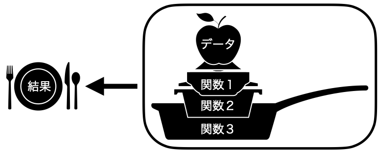

13 データハンドリング [抽出]
ここでは比較的綺麗に整形されているデータフレームを扱う方法について考えます。ここでいう「比較的綺麗なデータ」とは、すぐに分析に使えるレベルのデータを意味します。したがって、ここではデータ内の値を変更するような作業は行いません。基本的に分析しやすくなるように列の順番を替えたり、特定の列や行のみを抽出したり、データの順番を並び替える作業に注目します。
本章では以下の3つの内容を中心に解説します。
- パイプ演算子 (
|>)に慣れる - 特定の行と列の抽出
- データのソート
本章で学習する内容でデータを加工した場合、得られる結果物は元のデータの一部 (subset)となります。データの中身の値を変えたり、新しい列を追加したり、平均値などの記述統計量をまとめたりする方法については次の第14章で解説します。
13.1 データハンドリングとtidyverse
The tidyverse is an opinionated collection of R packages designed for data science. All packages share an underlying design philosophy, grammar, and data structures. (Tidyverseホームページから)
Tidyverseとはデータサイエンスのために考案された、強い信念と思想に基づいたRパッケージの集合です。Tidyverseに属するパッケージは思想、文法およびデータ構造を共有しています。Tidyverseの中核をなすパッケージは{ggplot2}(第19、20、21、22章)、{dplyr}(第13、14章)、{tidyr}(第17章)、{readr}(第8.1章)、{purrr} (第28章)、{tibble}(第10.4章)、{stringr} (第18章)、{forcats} (第16章)などがあり、このパッケージを支える数十のパッケージが含まれています。これらのパッケージは個別に読み込む必要はなく、{tidyverse}パッケージを読み込むだけで十分です。
Rにおけるデータハンドリング (データ操作)の標準が{dplyr}と{tidyr}中心となり、文字列の処理は{stringr}、factor型の操作は{forcats}、大量のモデルを自動的に分析し、結果を処理するためには{tibble}と{purrr}、可視化は{ggplot2}が主に使われています。これらのパッケージ間、あるいはパッケージ内におけるオブジェクトのやり取りは全てパイプ演算子を通じて行われています。また、これらのパッケージは整然データ (tidydata)を想定するか、整然データの作成するに特化しています。
Tidyverseの思想に基づいた「tidyverse流のコーディング」は現在のRそのものと言っても過言ではありません。ただし、tidyverseじゃないと出来ないデータハンドリング、可視化などはありません。tidyverseはデータサイエンスの思想に近いものであり、「異なる思想を持っているからこのような分析はできない」といったものはありません。tidyverseという概念が提唱される前にもRは存在し、tidyverse無き世界で今と同じことをやってきました。ただし、tidyverse流で書かれたRコードは可読性が優れ、コードを書く手間も短くなります。tidyverseの考え方がRのける「標準語」として定着しつつあるのは否めない事実であり、学習する誘引としては十分すぎるでしょう。
13.2 パイプ演算子 (|>)
%>%
R4.1が公開されるまでのパイプ演算子は以下で紹介する|>でなく、{magrittr}パッケージが提供する%>%であった。現時点においてインターネット上の記事、書籍での主流は%>%であるが、最近の流れはR内蔵（native）パイプ演算子の|>である。しかし、使い方はほぼ同じであるため、|>の箇所を%>%に置換しても問題ない。ただし、位置指定子（placeholder）の記号が|>では_、%>%では.であることには注意されたい。
{dplyr}パッケージを利用する前にパイプ演算子について説明します。パイプ演算子は{dplyr}に含まれている演算子ではなく、{magrittr}という別のパッケージから提供される演算子ですが、{tidyverse}パッケージを読み込むと自動的に読み込まれます。パイプ演算子はx |> y()のような書き方となりますが、これは「xをy()の第一引数として渡す」ことを意味します。xの部分はベクトルやデータフレームのようなオブジェクトでも、関数でも構いません。なぜなら、関数から得られた結果もまたベクトルやデータフレームといったものになるからです。つまり、x() |> y()という使い方も可能です。そして、パイプは無限に繋ぐこともできます。「データdfを関数x()で処理をし、その結果をまた関数y()で処理する」ことは、パイプを使うとdf |> x() |> y()のような書き方となります。
たとえば、「paste(3, "+", 5, "=", 8)を実行し、その結果をrep()関数を使って3回複製し、それをprint()を使って出力する」コードを考えてみましょう。方法としては2つ考えられます。まずは、それぞれの処理を別途のオブジェクトに格納する方法です。そして二つ目は関数の中に関数を使う方法です。
[1] "3 + 5 = 8" "3 + 5 = 8" "3 + 5 = 8"[1] "3 + 5 = 8" "3 + 5 = 8" "3 + 5 = 8"どれも結果は同じです。コードを書く手間を考えれば、後者の方が楽かも知れませんが、可読性があまりよくありません。一方、前者は可読性は良いものの、コードも長くなり、オブジェクトを2つも作ってしまうのでメモリの無駄遣いになります。
コードの可読性と書く手間、両方を満足する書き方がパイプ演算子|>です。まずは、例から見ましょう。
まず、結果は先ほどと同じです。それではコードの説明をしましょう。まずは、paste(3, "+", 5, "=", 8)を実行します。そしてその結果をそのままrep()関数の第一引数として渡されます。つまり、rep(paste(3, "+", 5, "=", 8), 3)になるわけです。ここではrep(3)と書きましたが、第一引数が渡されたため、3は第二引数扱いになります (パイプ演算子前のオブジェクトを第二、三引数として渡す方法は適宜説明します。)。そして、これをまたprint()関数に渡します。結果としてはprint(rep(paste(3, "+", 5, "=", 8), 3))となります。
関数を重ねると読む順番は「カッコの内側から外側へ」になりますが、パイプ演算子を使うと「左 (上)から右 (下)へ」といったより自然な読み方が可能になります。また、以下のコードのように、パイプ演算子後に改行を行うことでより読みやすいコードになります。これからはパイプ演算子の後は必ず改行をします。
これらの話をまとめてみましょう。あるデータを関数1に渡し、その結果を関数2に渡し、その結果を関数3に渡したものを最終結果として格納するとします。まず、パイプ演算子を使わない方法としては2つが考えられます。1つ目の方法は各処理の結果を、別途のオブジェクトとして格納する方法であり、コードで示すと以下のようになります。
これを可視化したものが 図 13.1 です。一回の処理ごとに結果を保存し、それをまた次の処理時においてデータとして使うイメージです。

こちらはコードの読みやすさはある程度確保されますが、コードが比較的長くなり、最終的には使わない結果1と結果2がメモリに残るといった短所があります1。
次の方法は、関数から得られた結果を、そのまま別の関数の引数として渡す方法であり、コードで示すと以下のようになります。
これを可視化したものが 図 13.2 です。

こちらはメモリの無駄遣いもなく、コードも短くなりましたが、既に指摘したとおり、コードの可読性が低くなります（書き方と読み方が逆になる）。パイプ演算子を使うということは、コードの短くし、メモリを効率的に使い、可読性を高めるとこととなります。先ほどのコードをパイプ演算子を使って整理すると以下のようになります。
このコードを可視化したものが 図 13.3 です。

処理後の結果を保存せず、すぐに次のプロセスに渡すことで、メモリ（ 図 13.1 のボウル）無駄を減らすことができます。またコードの書き方と読み方が一致します（格納の部分だけ逆）。パイプ演算子はたしかに便利で、「今どき」のRの書き方を象徴するようなものですが、一つの結果を出すまであまりにも多くのパイプ演算子を使うことはあ望ましくありません。
データハンドリングもこれと同様に、様々な作業を順に沿って行う必要があります。例えば、「（1）列を選択して、（2）欠損値を含む列を除去して、（3）ある変数の値を100倍にして、（4）ある変数の値がが小さい行から大きい順へ並び替える」といった手順です。これらの作業はパイプ演算子を使えば、スムーズに行うことが可能です。
13.3 列の抽出
それでは今回の実習用データを読み込みましょう。Ramen.csvには「ぐるなび」から取得したラーメン屋6292店舗の情報が入っています。具体的には東京、神奈川、千葉、埼玉、大阪、京都、兵庫、奈良、和歌山それぞれ都府県にあるラーメン屋の中から最大1000店舗の情報を抽出したものです。東京都は、ぐるなびに登録したラーメン屋が3000店舗以上ですが、1000店舗の基準はぐるなびの「おすすめ」の順で上位1000店舗となります。また、店側またはぐるなびが登録したカテゴリを基準に抽出したため、実際はラーメン屋ではないにもかかわらずラーメン屋としてデータ内に含まれている可能性があります。
まず、このデータを読み込み、dfという名付けます。
データの中身を確認してみましょう。
# A tibble: 6,292 × 14
ID Name Pref Zipcode Latitude Longitude Line Station Walk Bus Car
<chr> <chr> <chr> <dbl> <dbl> <dbl> <chr> <chr> <dbl> <dbl> <dbl>
1 e5396… 居酒… 東京… 1040031 35.7 140. 地下… 銀座一… 3 NA NA
2 gfeb6… 本格… 東京… 1100005 35.7 140. 地下… 仲御徒… 1 NA NA
3 ggt59… 食べ… 東京… 1250041 35.8 140. ＪＲ… 金町駅 2 NA NA
4 g1813… 博多… 東京… 1920904 35.7 139. ＪＲ 八王子… 1 NA NA
5 ggww1… まさ… 東京… 1500042 35.7 140. 地下… 渋谷駅 7 NA NA
6 gdzk5… 完全… 東京… 1000013 35.7 140. 地下… 虎ノ門… 3 NA NA
7 ga2g2… 鶏そ… 東京… 1760006 35.7 140. 西武… 江古田… 2 NA NA
8 gg9m1… 宴会… 東京… 1010021 35.7 140. ＪＲ 秋葉原… 4 NA NA
9 gdvk2… 中国… 東京… 1000006 35.7 140. ＪＲ 有楽町… 1 NA NA
10 gggb2… 中国… 東京… 1140002 35.8 140. 地下… 王子駅 2 NA NA
# ℹ 6,282 more rows
# ℹ 3 more variables: Budget <dbl>, ScoreN <dbl>, Score <dbl> 1行目の# A tibble: 2,000 x 12から、ケース数 (店舗数)は2000、変数は12個あることが分かります。各変数の詳細は 表 13.1 の通りです。
| 変数名 | 説明 |
|---|---|
|
店舗ID |
|
店舗名 |
|
店舗の所在地 (都府県) |
|
店舗の郵便番号 |
|
緯度 |
|
経度 |
|
最寄りの駅の路線 |
|
最寄りの駅 |
|
最寄りの駅からの距離 (徒歩; 分) |
|
最寄りの駅からの距離 (バス; 分) |
|
最寄りの駅からの距離 (車; 分) |
|
平均予算 (円) |
|
口コミの数 |
|
口コミ評価の平均値 |
それではここからはdfを用いた{dplyr}の様々な機能を紹介していきます。
13.3.1 特定の列を抽出する
まずは、データフレームから特定の列のみを残す、除去する方法について紹介します。たとえば、dfからID、Name、Pref、Scoreのみを残すとします。{dplyr}を使わない方法と{dplyr}のselect()関数を使った方法を紹介します。
# A tibble: 6,292 × 4
ID Name Pref Score
<chr> <chr> <chr> <dbl>
1 e539604 居酒屋 龍記 京橋店 東京都 NA
2 gfeb600 本格上海料理 新錦江 上野御徒町本店 東京都 4.5
3 ggt5900 食べ飲み放題×中華ビストロ NOZOMI（のぞみ） 東京都 NA
4 g181340 博多餃子軒 八王子店 タピオカ店 Bull Pulu（ブルプル）併設 東京都 NA
5 ggww100 まさ屋 渋谷店 東京都 NA
6 gdzk500 完全個室 上海レストラン 檸檬 霞ヶ関ビル内店 東京都 NA
7 ga2g202 鶏そば きらり 東京都 NA
8 gg9m100 宴会個室×餃子酒場 北京飯店 秋葉原本店 東京都 3.33
9 gdvk200 中国料理 宝龍 東京都 2.5
10 gggb200 中国料理 天安門 東京都 NA
# ℹ 6,282 more rows# A tibble: 6,292 × 4
ID Name Pref Score
<chr> <chr> <chr> <dbl>
1 e539604 居酒屋 龍記 京橋店 東京都 NA
2 gfeb600 本格上海料理 新錦江 上野御徒町本店 東京都 4.5
3 ggt5900 食べ飲み放題×中華ビストロ NOZOMI（のぞみ） 東京都 NA
4 g181340 博多餃子軒 八王子店 タピオカ店 Bull Pulu（ブルプル）併設 東京都 NA
5 ggww100 まさ屋 渋谷店 東京都 NA
6 gdzk500 完全個室 上海レストラン 檸檬 霞ヶ関ビル内店 東京都 NA
7 ga2g202 鶏そば きらり 東京都 NA
8 gg9m100 宴会個室×餃子酒場 北京飯店 秋葉原本店 東京都 3.33
9 gdvk200 中国料理 宝龍 東京都 2.5
10 gggb200 中国料理 天安門 東京都 NA
# ℹ 6,282 more rows どれも結果は同じですが、select()関数を使った方がより読みやすいコードになっているでしょう。むろん、select()関数を使わない方がスッキリする方も知るかも知れません。実際、自分でパッケージなどを作成する際はselect()を使わない場合が多いです。ただし、一般的な分析の流れではselect()の方がコードも意味も明確となり、パイプ演算子でつなぐのも容易です。
select()関数の使い方は非常に簡単です。第一引数はデータフレームですが、パイプ演算子を使う場合は省略可能です。第二引数以降の引数はデータフレームの変数名です。つまり、ここには残す変数名のみを書くだけで十分です。
また、select()関数を使って列の順番を変えることもできます。たとえば、ID、Pref、Name、Scoreの順で列を残すなら、この順番で引数を書くだけです。
# A tibble: 6,292 × 3
ID Pref Name
<chr> <chr> <chr>
1 e539604 東京都 居酒屋 龍記 京橋店
2 gfeb600 東京都 本格上海料理 新錦江 上野御徒町本店
3 ggt5900 東京都 食べ飲み放題×中華ビストロ NOZOMI（のぞみ）
4 g181340 東京都 博多餃子軒 八王子店 タピオカ店 Bull Pulu（ブルプル）併設
5 ggww100 東京都 まさ屋 渋谷店
6 gdzk500 東京都 完全個室 上海レストラン 檸檬 霞ヶ関ビル内店
7 ga2g202 東京都 鶏そば きらり
8 gg9m100 東京都 宴会個室×餃子酒場 北京飯店 秋葉原本店
9 gdvk200 東京都 中国料理 宝龍
10 gggb200 東京都 中国料理 天安門
# ℹ 6,282 more rows13.3.2 特定の列を抽出し、列名を変更する
また、特定の列を残す際、変数名を変更することも可能です。今回もID、Name、Pref、Scoreのみを残しますが、Pref列はPrefectureに変えてみましょう。
# A tibble: 6,292 × 4
ID Name Prefecture Score
<chr> <chr> <chr> <dbl>
1 e539604 居酒屋 龍記 京橋店 東京都 NA
2 gfeb600 本格上海料理 新錦江 上野御徒町本店 東京都 4.5
3 ggt5900 食べ飲み放題×中華ビストロ NOZOMI（のぞみ） 東京都 NA
4 g181340 博多餃子軒 八王子店 タピオカ店 Bull Pulu（ブルプル… 東京都 NA
5 ggww100 まさ屋 渋谷店 東京都 NA
6 gdzk500 完全個室 上海レストラン 檸檬 霞ヶ関ビル内店 東京都 NA
7 ga2g202 鶏そば きらり 東京都 NA
8 gg9m100 宴会個室×餃子酒場 北京飯店 秋葉原本店 東京都 3.33
9 gdvk200 中国料理 宝龍 東京都 2.5
10 gggb200 中国料理 天安門 東京都 NA
# ℹ 6,282 more rows 抽出する際、変数を新しい変数名 = 既存の変数名にするだけで、変数名が簡単に変更できました。もし、特定の列は抽出しないものの、変数名を変えるにはどうすれば良いでしょうか。ここではdfのPrefをPrefectureに、WalkをDistanceに変更してみます。{dplyr}を使わない場合と{dplyr}のrename()関数を使う場合を両方紹介します。
まずは、name()関数についてですが、これはデータフレームの変数名をベクトルとして出力する関数です。
[1] "ID" "Name" "Pref" "Zipcode" "Latitude" "Longitude"
[7] "Line" "Station" "Walk" "Bus" "Car" "Budget"
[13] "ScoreN" "Score" 察しの良い読者は気づいたかも知れませんが、names(データフレーム名)の結果はベクトルであり、上書きも可能です。つまり、names(df)の3番目と9番目の要素を"Prefecture"と"Distance"に上書きすることができるということです。
# A tibble: 6,292 × 14
ID Name Prefecture Zipcode Latitude Longitude Line Station Distance
<chr> <chr> <chr> <dbl> <dbl> <dbl> <chr> <chr> <dbl>
1 e539604 居酒屋 … 東京都 1040031 35.7 140. 地下… 銀座一… 3
2 gfeb600 本格上… 東京都 1100005 35.7 140. 地下… 仲御徒… 1
3 ggt5900 食べ飲… 東京都 1250041 35.8 140. ＪＲ… 金町駅 2
4 g181340 博多餃… 東京都 1920904 35.7 139. ＪＲ 八王子… 1
5 ggww100 まさ屋 … 東京都 1500042 35.7 140. 地下… 渋谷駅 7
6 gdzk500 完全個… 東京都 1000013 35.7 140. 地下… 虎ノ門… 3
7 ga2g202 鶏そば … 東京都 1760006 35.7 140. 西武… 江古田… 2
8 gg9m100 宴会個… 東京都 1010021 35.7 140. ＪＲ 秋葉原… 4
9 gdvk200 中国料… 東京都 1000006 35.7 140. ＪＲ 有楽町… 1
10 gggb200 中国料… 東京都 1140002 35.8 140. 地下… 王子駅 2
# ℹ 6,282 more rows
# ℹ 5 more variables: Bus <dbl>, Car <dbl>, Budget <dbl>, ScoreN <dbl>,
# Score <dbl> 簡単に変数名の変更ができました。続いて、{dplyr}のrename()関数を使った方法です。今回は、PrefectureをPrefに、DistanceをWalkに戻して見ましょう。そして、出力するだけにとどまらず、dfに上書きしましょう。
これで終わりです。実はselect()関数と使い方がほぼ同じです。ただし、残す変数名を指定する必要がなく、名前を変更する変数名と新しい変数名を入れるだけです。変数が少ないデータならselect()でもあまり不便は感じないかも知れませんが、変数が多くなるとrename()関数は非常に便利です。
13.3.3 特定の列を除外する
逆に、一部の変数をデータフレームから除去したい場合もあるでしょう。たとえば、緯度 (Latitude)と経度 (Longitude)はラーメン屋の情報としては不要かもしれません。この2つの変数を除外するためにはどうすれば良いでしょうか。まず考えられるのは、この2つの変数を除いた変数を指定・抽出する方法です。
# A tibble: 6,292 × 12
ID Name Pref Zipcode Line Station Walk Bus Car Budget ScoreN Score
<chr> <chr> <chr> <dbl> <chr> <chr> <dbl> <dbl> <dbl> <dbl> <dbl> <dbl>
1 e539… 居酒… 東京… 1040031 地下… 銀座一… 3 NA NA 3000 0 NA
2 gfeb… 本格… 東京… 1100005 地下… 仲御徒… 1 NA NA 2000 2 4.5
3 ggt5… 食べ… 東京… 1250041 ＪＲ… 金町駅 2 NA NA 2980 0 NA
4 g181… 博多… 東京… 1920904 ＪＲ 八王子… 1 NA NA 2000 0 NA
5 ggww… まさ… 東京… 1500042 地下… 渋谷駅 7 NA NA 380 0 NA
6 gdzk… 完全… 東京… 1000013 地下… 虎ノ門… 3 NA NA 2980 0 NA
7 ga2g… 鶏そ… 東京… 1760006 西武… 江古田… 2 NA NA 850 0 NA
8 gg9m… 宴会… 東京… 1010021 ＪＲ 秋葉原… 4 NA NA 2000 3 3.33
9 gdvk… 中国… 東京… 1000006 ＪＲ 有楽町… 1 NA NA 1000 2 2.5
10 gggb… 中国… 東京… 1140002 地下… 王子駅 2 NA NA 2000 0 NA
# ℹ 6,282 more rows かなり長いコードになりましたね。しかし、もっと簡単な方法があります。それは-を使う方法です。
# A tibble: 6,292 × 12
ID Name Pref Zipcode Line Station Walk Bus Car Budget ScoreN Score
<chr> <chr> <chr> <dbl> <chr> <chr> <dbl> <dbl> <dbl> <dbl> <dbl> <dbl>
1 e539… 居酒… 東京… 1040031 地下… 銀座一… 3 NA NA 3000 0 NA
2 gfeb… 本格… 東京… 1100005 地下… 仲御徒… 1 NA NA 2000 2 4.5
3 ggt5… 食べ… 東京… 1250041 ＪＲ… 金町駅 2 NA NA 2980 0 NA
4 g181… 博多… 東京… 1920904 ＪＲ 八王子… 1 NA NA 2000 0 NA
5 ggww… まさ… 東京… 1500042 地下… 渋谷駅 7 NA NA 380 0 NA
6 gdzk… 完全… 東京… 1000013 地下… 虎ノ門… 3 NA NA 2980 0 NA
7 ga2g… 鶏そ… 東京… 1760006 西武… 江古田… 2 NA NA 850 0 NA
8 gg9m… 宴会… 東京… 1010021 ＪＲ 秋葉原… 4 NA NA 2000 3 3.33
9 gdvk… 中国… 東京… 1000006 ＪＲ 有楽町… 1 NA NA 1000 2 2.5
10 gggb… 中国… 東京… 1140002 地下… 王子駅 2 NA NA 2000 0 NA
# ℹ 6,282 more rows 除外したい変数名の前に-を付けただけです。また、-Latitudeと-Longitudeをそれぞれ指定せず、-c(Latitude, Longitude)のようにc()でまとめるのも可能です。
13.3.4 隣接した列を指定する
先ほど、dfから緯度 (Latitude)と経度 (Longitude)を除外する例を考えてみましょう。-を使うと簡単ですが、場合によっては残す変数名を指定する必要もあります。
よく考えてみれば、IDからZipcodeは隣接した列ですし、LineからScoreまでもそうです。これはnames()関数で確認できます。
[1] "ID" "Name" "Pref" "Zipcode" "Latitude" "Longitude"
[7] "Line" "Station" "Walk" "Bus" "Car" "Budget"
[13] "ScoreN" "Score" ここで便利な演算子が:です。これまで、xからyまでの公差1の等差数列を作成する際にx:yを使って来ましたが、これに非常に似ています。データフレームの「x列からy列まで」の表記もselect()関数内では:と書くことができます。したがって、上記のコードは以下のように短縮化可能です。
「dfのIDからZipcodeまで、そしてLineからScoreまでの列を選択する」という意味です。非常に便利な演算子ですので、-と合わせて覚えておきましょう。
13.3.5 一部の列の順番だけを変える
ある列の位置を替えたいとします。たとえば、ScoreとScoreNをそれぞれ1列目、2列目にしたい場合、どうすれば良いでしょうか。これまで勉強したことを考えると、以下のようなコードで問題ないでしょう。
# A tibble: 6,292 × 14
Score ScoreN ID Name Pref Zipcode Latitude Longitude Line Station Walk
<dbl> <dbl> <chr> <chr> <chr> <dbl> <dbl> <dbl> <chr> <chr> <dbl>
1 NA 0 e539… 居酒… 東京… 1040031 35.7 140. 地下… 銀座一… 3
2 4.5 2 gfeb… 本格… 東京… 1100005 35.7 140. 地下… 仲御徒… 1
3 NA 0 ggt5… 食べ… 東京… 1250041 35.8 140. ＪＲ… 金町駅 2
4 NA 0 g181… 博多… 東京… 1920904 35.7 139. ＪＲ 八王子… 1
5 NA 0 ggww… まさ… 東京… 1500042 35.7 140. 地下… 渋谷駅 7
6 NA 0 gdzk… 完全… 東京… 1000013 35.7 140. 地下… 虎ノ門… 3
7 NA 0 ga2g… 鶏そ… 東京… 1760006 35.7 140. 西武… 江古田… 2
8 3.33 3 gg9m… 宴会… 東京… 1010021 35.7 140. ＪＲ 秋葉原… 4
9 2.5 2 gdvk… 中国… 東京… 1000006 35.7 140. ＪＲ 有楽町… 1
10 NA 0 gggb… 中国… 東京… 1140002 35.8 140. 地下… 王子駅 2
# ℹ 6,282 more rows
# ℹ 3 more variables: Bus <dbl>, Car <dbl>, Budget <dbl> しかし、{dplyr}にはrelocate()というより便利な専用関数を提供しています。relocate()には変数名を指定するだけですが、ここで指定した変数がデータフレームの最初列の方に移動します。
# A tibble: 6,292 × 14
Score ScoreN ID Name Pref Zipcode Latitude Longitude Line Station Walk
<dbl> <dbl> <chr> <chr> <chr> <dbl> <dbl> <dbl> <chr> <chr> <dbl>
1 NA 0 e539… 居酒… 東京… 1040031 35.7 140. 地下… 銀座一… 3
2 4.5 2 gfeb… 本格… 東京… 1100005 35.7 140. 地下… 仲御徒… 1
3 NA 0 ggt5… 食べ… 東京… 1250041 35.8 140. ＪＲ… 金町駅 2
4 NA 0 g181… 博多… 東京… 1920904 35.7 139. ＪＲ 八王子… 1
5 NA 0 ggww… まさ… 東京… 1500042 35.7 140. 地下… 渋谷駅 7
6 NA 0 gdzk… 完全… 東京… 1000013 35.7 140. 地下… 虎ノ門… 3
7 NA 0 ga2g… 鶏そ… 東京… 1760006 35.7 140. 西武… 江古田… 2
8 3.33 3 gg9m… 宴会… 東京… 1010021 35.7 140. ＪＲ 秋葉原… 4
9 2.5 2 gdvk… 中国… 東京… 1000006 35.7 140. ＪＲ 有楽町… 1
10 NA 0 gggb… 中国… 東京… 1140002 35.8 140. 地下… 王子駅 2
# ℹ 6,282 more rows
# ℹ 3 more variables: Bus <dbl>, Car <dbl>, Budget <dbl> relocate()を使うとID:Budgetが省略可能となり、より短いコードになります。もう一つの例は、最初に持ってくるのではなく、「ある変数の前」または「ある変数の後」に移動させるケースです。これもrelocate()で可能ですが、もう一つの引数が必要です。PrefとZipcdoeの順番を変えるなら、まずは以下のような方法が考えられます。
# A tibble: 6,292 × 14
ID Name Zipcode Pref Latitude Longitude Line Station Walk Bus Car
<chr> <chr> <dbl> <chr> <dbl> <dbl> <chr> <chr> <dbl> <dbl> <dbl>
1 e5396… 居酒… 1040031 東京… 35.7 140. 地下… 銀座一… 3 NA NA
2 gfeb6… 本格… 1100005 東京… 35.7 140. 地下… 仲御徒… 1 NA NA
3 ggt59… 食べ… 1250041 東京… 35.8 140. ＪＲ… 金町駅 2 NA NA
4 g1813… 博多… 1920904 東京… 35.7 139. ＪＲ 八王子… 1 NA NA
5 ggww1… まさ… 1500042 東京… 35.7 140. 地下… 渋谷駅 7 NA NA
6 gdzk5… 完全… 1000013 東京… 35.7 140. 地下… 虎ノ門… 3 NA NA
7 ga2g2… 鶏そ… 1760006 東京… 35.7 140. 西武… 江古田… 2 NA NA
8 gg9m1… 宴会… 1010021 東京… 35.7 140. ＪＲ 秋葉原… 4 NA NA
9 gdvk2… 中国… 1000006 東京… 35.7 140. ＪＲ 有楽町… 1 NA NA
10 gggb2… 中国… 1140002 東京… 35.8 140. 地下… 王子駅 2 NA NA
# ℹ 6,282 more rows
# ℹ 3 more variables: Budget <dbl>, ScoreN <dbl>, Score <dbl> これをrelocate()で書き換えるなら、.afterまたは.before引数が必要になります。relocate(変数名1, .after = 変数名2)は「変数1を変数2の直後に移動させる」 ことを意味します。
# A tibble: 6,292 × 14
ID Name Zipcode Pref Latitude Longitude Line Station Walk Bus Car
<chr> <chr> <dbl> <chr> <dbl> <dbl> <chr> <chr> <dbl> <dbl> <dbl>
1 e5396… 居酒… 1040031 東京… 35.7 140. 地下… 銀座一… 3 NA NA
2 gfeb6… 本格… 1100005 東京… 35.7 140. 地下… 仲御徒… 1 NA NA
3 ggt59… 食べ… 1250041 東京… 35.8 140. ＪＲ… 金町駅 2 NA NA
4 g1813… 博多… 1920904 東京… 35.7 139. ＪＲ 八王子… 1 NA NA
5 ggww1… まさ… 1500042 東京… 35.7 140. 地下… 渋谷駅 7 NA NA
6 gdzk5… 完全… 1000013 東京… 35.7 140. 地下… 虎ノ門… 3 NA NA
7 ga2g2… 鶏そ… 1760006 東京… 35.7 140. 西武… 江古田… 2 NA NA
8 gg9m1… 宴会… 1010021 東京… 35.7 140. ＪＲ 秋葉原… 4 NA NA
9 gdvk2… 中国… 1000006 東京… 35.7 140. ＪＲ 有楽町… 1 NA NA
10 gggb2… 中国… 1140002 東京… 35.8 140. 地下… 王子駅 2 NA NA
# ℹ 6,282 more rows
# ℹ 3 more variables: Budget <dbl>, ScoreN <dbl>, Score <dbl> .beforeを使うことできます。この場合は「ZipcodeをPrefの直前に移動させる」 ことを指定する必要があります。結果は省略しますが、自分でコードを走らせ、上と同じ結果が得られるかを確認してみてください。
13.3.6 select()の便利な機能
select()関数は他にも便利な機能がいくつかあります。ここではいくつの機能を紹介しますが、より詳しい内容は?dplyr::selectを参照してください。
starts_with()とends_with()、contains()、num_range(): 特定の文字を含む変数を選択する
まずは、特定の文字を含む変数名を指定する方法です。starts_with("X")、ends_with("X")、contains("X")は変数名が"X"で始まるか、"X"で終わるか、"X"を含むかを判断し、条件に合う変数名を返す関数です。実際の例を見ましょう。
# A tibble: 6,292 × 4
ID Name ScoreN Score
<chr> <chr> <dbl> <dbl>
1 e539604 居酒屋 龍記 京橋店 0 NA
2 gfeb600 本格上海料理 新錦江 上野御徒町本店 2 4.5
3 ggt5900 食べ飲み放題×中華ビストロ NOZOMI（のぞみ） 0 NA
4 g181340 博多餃子軒 八王子店 タピオカ店 Bull Pulu（ブルプル）併設 0 NA
5 ggww100 まさ屋 渋谷店 0 NA
6 gdzk500 完全個室 上海レストラン 檸檬 霞ヶ関ビル内店 0 NA
7 ga2g202 鶏そば きらり 0 NA
8 gg9m100 宴会個室×餃子酒場 北京飯店 秋葉原本店 3 3.33
9 gdvk200 中国料理 宝龍 2 2.5
10 gggb200 中国料理 天安門 0 NA
# ℹ 6,282 more rows# A tibble: 6,292 × 8
ID Pref Station Walk Bus Car Budget ScoreN
<chr> <chr> <chr> <dbl> <dbl> <dbl> <dbl> <dbl>
1 e539604 東京都 銀座一丁目駅 3 NA NA 3000 0
2 gfeb600 東京都 仲御徒町駅 1 NA NA 2000 2
3 ggt5900 東京都 金町駅 2 NA NA 2980 0
4 g181340 東京都 八王子駅 1 NA NA 2000 0
5 ggww100 東京都 渋谷駅 7 NA NA 380 0
6 gdzk500 東京都 虎ノ門駅 3 NA NA 2980 0
7 ga2g202 東京都 江古田駅 2 NA NA 850 0
8 gg9m100 東京都 秋葉原駅 4 NA NA 2000 3
9 gdvk200 東京都 有楽町駅 1 NA NA 1000 2
10 gggb200 東京都 王子駅 2 NA NA 2000 0
# ℹ 6,282 more rows# A tibble: 6,292 × 2
Pref Score
<chr> <dbl>
1 東京都 NA
2 東京都 4.5
3 東京都 NA
4 東京都 NA
5 東京都 NA
6 東京都 NA
7 東京都 NA
8 東京都 3.33
9 東京都 2.5
10 東京都 NA
# ℹ 6,282 more rows 他の使い方としてはX1、X2のような「文字+数字」の変数を選択する際、starts_with()が活躍します。たとえば、以下のようなmyDF1があるとします。
# tibble()でなく、data.frame()も使用可能です。
myDF1 <- tibble(
ID = 1:5,
X1 = c(2, 4, 6, 2, 7),
Y1 = c(3, 5, 1, 1, 0),
X1D = c(4, 2, 1, 6, 9),
X2 = c(5, 5, 6, 0, 2),
Y2 = c(3, 3, 2, 3, 1),
X2D = c(8, 9, 5, 0, 1),
X3 = c(3, 0, 3, 0, 2),
Y3 = c(1, 5, 9, 1, 3),
X3D = c(9, 1, 3, 3, 8)
)
myDF1# A tibble: 5 × 10
ID X1 Y1 X1D X2 Y2 X2D X3 Y3 X3D
<int> <dbl> <dbl> <dbl> <dbl> <dbl> <dbl> <dbl> <dbl> <dbl>
1 1 2 3 4 5 3 8 3 1 9
2 2 4 5 2 5 3 9 0 5 1
3 3 6 1 1 6 2 5 3 9 3
4 4 2 1 6 0 3 0 0 1 3
5 5 7 0 9 2 1 1 2 3 8 このmyDF1からID、Y1、Y2、Y3を抽出するにはどうすれば良いでしょうか。これらの変数は隣接していないため、:も使えませんが、starts_with()を使えば簡単です。
# A tibble: 5 × 4
ID Y1 Y2 Y3
<int> <dbl> <dbl> <dbl>
1 1 3 3 1
2 2 5 3 5
3 3 1 2 9
4 4 1 3 1
5 5 0 1 3 それでは、ID、X1、X2、X3はどうでしょうか。starts_with("X")だと、X1cなども選択されてしまいますね。ここで-ends_with()の出番です。つまり、「まずはstarts_with("X")でXで始まる変数を選択し、続いて、Dで終わるものを除外すればいいじゃん？」です。それでは、やってみましょうか。
# A tibble: 5 × 3
X1 X2 X3
<dbl> <dbl> <dbl>
1 2 5 3
2 4 5 0
3 6 6 3
4 2 0 0
5 7 2 2 あらら、IDも同時になくなりましたね2。実はこのような時のために用意された関数があり、それがnum_range()です。num_range()の第一引数はstarts_with()関数と同じですが、第二引数も必要です。この第二引数にはnumeric型のベクトルが必要です。1:3でも、c(1, 2, 3)でも構いません。たとえば、ID、X1、X2、X3するには以下のように書きます。
# A tibble: 5 × 4
ID X1 X2 X3
<int> <dbl> <dbl> <dbl>
1 1 2 5 3
2 2 4 5 0
3 3 6 6 3
4 4 2 0 0
5 5 7 2 2all_of()とany_of(): 文字型ベクトルを用いた変数の選択
all_of()とany_of()はselect()内の変数名として文字型ベクトルを使う際に用いる関数です。これは抽出したい列名が既にcharacter型ベクトルとして用意されている場合、便利な関数です。たとえば、以下のName_Vecを考えてみましょう。
このName_Vecの要素と同じ列名を持つ列とID列をmyDF1から抽出する方法は以下の2通りです。
# A tibble: 5 × 4
ID X1 X2 X3
<int> <dbl> <dbl> <dbl>
1 1 2 5 3
2 2 4 5 0
3 3 6 6 3
4 4 2 0 0
5 5 7 2 2# A tibble: 5 × 4
ID X1 X2 X3
<int> <dbl> <dbl> <dbl>
1 1 2 5 3
2 2 4 5 0
3 3 6 6 3
4 4 2 0 0
5 5 7 2 2 今の例だと、select()を使わない前者の方が便利かも知れませんが、select()内に外の変数名も指定する場合も多いので、後者の方が汎用性は高いです。私から見れば、今の例でも後者の方が読みやすく、使いやすいと思います。
それでは以下のようなName_Vecはどうでしょう。今回は、myDF1に含まれていないX4とX5もあります。
## Error: Can't subset columns that don't exist.
## Columns `X4` and `X5` don't exist. このようにエラーが出てしまします。つまり、all_of()の場合、引数の要素全てがデータフレームに存在する必要があります。もし、ないものは無視して、合致する列だけ取り出したいはどうすれば良いでしょうか。そこで登場するのがany_of()です。
# A tibble: 5 × 3
X1 X2 X3
<dbl> <dbl> <dbl>
1 2 5 3
2 4 5 0
3 6 6 3
4 2 0 0
5 7 2 2 any_of()の方がより使いやすいと思う方も多いでしょうが、必ずしもそうとは限りません。たとえば、Name_Vecに誤字などが含まれる場合、any_of()だと誤字が含まれている変数は取り出しません。この場合はむしろちゃんとエラーを表示してくれた方が嬉しいですね。
last_col(): 最後の列を選択する
普段あまり使わない機能ですが、最後の列を選択するlast_col()という関数もあります。
# A tibble: 6,292 × 2
ID Score
<chr> <dbl>
1 e539604 NA
2 gfeb600 4.5
3 ggt5900 NA
4 g181340 NA
5 ggww100 NA
6 gdzk500 NA
7 ga2g202 NA
8 gg9m100 3.33
9 gdvk200 2.5
10 gggb200 NA
# ℹ 6,282 more rows 最後からk番目の列を指定することも可能です。最後の列の番号が0であり、その手前の列は1となります。つまり、last_col()の中には「最後から何番目の列か」を指定すれば良いです。最後の列は最後の列そのままなので0です。
# A tibble: 6,292 × 2
ID ScoreN
<chr> <dbl>
1 e539604 0
2 gfeb600 2
3 ggt5900 0
4 g181340 0
5 ggww100 0
6 gdzk500 0
7 ga2g202 0
8 gg9m100 3
9 gdvk200 2
10 gggb200 0
# ℹ 6,282 more rows このlast_col()の引数を指定しないと、それは最後の列を意味します。つまり、last_col()とlast_col(0)は同じです。これを利用すれば、「ある変数の最後の列へ移動させる」こともできます。たとえば、IDを最後の列に移動させたい場合、relocate(ID, .after = last_col())のように書きます。
where(): データ型から変数を選択する
最後に、「numeric型の列のみ抽出したい」、「character型の列だけほしい」場合に便利なwhere()関数を紹介します。where()の中に入る引数は一つだけであり、データ型を判定する関数名が入ります。たとえば、numeric型か否かを判断する関数はis.numeric()です。dfからnumeric型の変数のみを抽出したい場合は以下のように書きます。ただし、where()の中の関数は()を省略します。
# A tibble: 6,292 × 9
Zipcode Latitude Longitude Walk Bus Car Budget ScoreN Score
<dbl> <dbl> <dbl> <dbl> <dbl> <dbl> <dbl> <dbl> <dbl>
1 1040031 35.7 140. 3 NA NA 3000 0 NA
2 1100005 35.7 140. 1 NA NA 2000 2 4.5
3 1250041 35.8 140. 2 NA NA 2980 0 NA
4 1920904 35.7 139. 1 NA NA 2000 0 NA
5 1500042 35.7 140. 7 NA NA 380 0 NA
6 1000013 35.7 140. 3 NA NA 2980 0 NA
7 1760006 35.7 140. 2 NA NA 850 0 NA
8 1010021 35.7 140. 4 NA NA 2000 3 3.33
9 1000006 35.7 140. 1 NA NA 1000 2 2.5
10 1140002 35.8 140. 2 NA NA 2000 0 NA
# ℹ 6,282 more rows !を使って条件に合致する列を除外することも可能です。もし、character型の列を除外する場合は以下のように!where(is.character)を指定します。
# A tibble: 6,292 × 9
Zipcode Latitude Longitude Walk Bus Car Budget ScoreN Score
<dbl> <dbl> <dbl> <dbl> <dbl> <dbl> <dbl> <dbl> <dbl>
1 1040031 35.7 140. 3 NA NA 3000 0 NA
2 1100005 35.7 140. 1 NA NA 2000 2 4.5
3 1250041 35.8 140. 2 NA NA 2980 0 NA
4 1920904 35.7 139. 1 NA NA 2000 0 NA
5 1500042 35.7 140. 7 NA NA 380 0 NA
6 1000013 35.7 140. 3 NA NA 2980 0 NA
7 1760006 35.7 140. 2 NA NA 850 0 NA
8 1010021 35.7 140. 4 NA NA 2000 3 3.33
9 1000006 35.7 140. 1 NA NA 1000 2 2.5
10 1140002 35.8 140. 2 NA NA 2000 0 NA
# ℹ 6,282 more rows &を使って複数の条件を使うことも可能です。たとえば、ID変数に加えて「"L"で始まる変数の中でnumeric型の列を抽出」するコードは以下のようになります。
# A tibble: 6,292 × 3
ID Latitude Longitude
<chr> <dbl> <dbl>
1 e539604 35.7 140.
2 gfeb600 35.7 140.
3 ggt5900 35.8 140.
4 g181340 35.7 139.
5 ggww100 35.7 140.
6 gdzk500 35.7 140.
7 ga2g202 35.7 140.
8 gg9m100 35.7 140.
9 gdvk200 35.7 140.
10 gggb200 35.8 140.
# ℹ 6,282 more rows13.4 行の抽出
13.4.1 指定した行を抽出する
他にも特定の行を抽出する場合があります。たとえば、「dfの最初の5行」や「dfの8行目のケース」といった場合です。この操作には{dplyr}のslice_*()関数群が便利です。それではそれぞれの関数の使い方について紹介していきます。その前に、実習用データとしてdfから一部の列のみを抽出したselelct.dfを作成します。
slice(): 指定した番号の行のみ抽出する
select.dfから2, 8, 9行目の行を抽出したいとします。このような簡単な操作はパッケージを使わず、以下のように抽出することができます。
# A tibble: 3 × 5
ID Name Pref Budget Score
<chr> <chr> <chr> <dbl> <dbl>
1 gfeb600 本格上海料理 新錦江 上野御徒町本店 東京都 2000 4.5
2 gg9m100 宴会個室×餃子酒場 北京飯店 秋葉原本店 東京都 2000 3.33
3 gdvk200 中国料理 宝龍 東京都 1000 2.5 しかし、以下のslice()関数を使うとパイプ演算子を前後に付けることが可能であり3、コードの可読性も高いです。slice()関数には以下のように抽出したい行の番号を入れるだけです。
# A tibble: 3 × 5
ID Name Pref Budget Score
<chr> <chr> <chr> <dbl> <dbl>
1 gfeb600 本格上海料理 新錦江 上野御徒町本店 東京都 2000 4.5
2 gg9m100 宴会個室×餃子酒場 北京飯店 秋葉原本店 東京都 2000 3.33
3 gdvk200 中国料理 宝龍 東京都 1000 2.5 slice(2, 8, 9)でもslice(c(2, 8, 9))でも構いません。また、隣接した行でしたら:を使うことも可能です。たとえば、10行目から15行目まで抽出する場合はslice(10:15)のような書き方も出来ます。
slice_head(): 最初のn行を抽出する
# A tibble: 3 × 5
ID Name Pref Budget Score
<chr> <chr> <chr> <dbl> <dbl>
1 e539604 居酒屋 龍記 京橋店 東京都 3000 NA
2 gfeb600 本格上海料理 新錦江 上野御徒町本店 東京都 2000 4.5
3 ggt5900 食べ飲み放題×中華ビストロ NOZOMI（のぞみ） 東京都 2980 NA これはhead(データ名, n = 出力する個数)と同じ動きをする関数です。注意点としては引数n =を必ず付ける点です。たとえば、slice_head(3)にすると、select.dfの3行目のみ抽出されます。
slice_tail(): 最後のn行を抽出する
# A tibble: 7 × 5
ID Name Pref Budget Score
<chr> <chr> <chr> <dbl> <dbl>
1 5508852 場鶴 和歌山県 NA NA
2 7113351 来来亭 橋本店 和歌山県 NA NA
3 6364939 ばり馬 和歌山紀三井寺店 和歌山県 NA NA
4 7103349 ramen BIRDMAN 和歌山県 NA NA
5 7315303 薩摩ラーメン 斗天王 和歌山県 NA NA
6 7703472 まるしげ 和歌山県 NA NA
7 6395035 暴豚製麺所 和歌山県 NA NA これはtail(データ名, n = 出力する個数)と同じ動きをする関数です。ちなみに、このn引数もn =を明記する必要があります。
slice_max(): 指定した変数が大きい順でn行抽出する
slice_max()は指定した変数が大きい順でn行抽出する関数です。たとえば、Budgetが高い順で4店舗を抽出する場合は以下のように書きます。
# A tibble: 4 × 5
ID Name Pref Budget Score
<chr> <chr> <chr> <dbl> <dbl>
1 g670609 横浜ベイシェラトン ホテル＆タワーズ 中国料理 彩龍 神奈川… 8000 NA
2 g910420 JASMINE 憶江南 東京都 7000 NA
3 7176666 赤坂焼鳥 鳳 東京都 7000 NA
4 b612800 羽衣 銀座本店 東京都 6000 NAslice_min(): 指定した変数が小さい順でn行抽出する
一方、slice_min()関数が小さい順で抽出します。
# A tibble: 4 × 5
ID Name Pref Budget Score
<chr> <chr> <chr> <dbl> <dbl>
1 6384909 葛西大勝軒 東京都 NA 1
2 6929243 由丸 アトレヴィ大塚店 東京都 NA 1
3 5816075 ラーメン戯拉戯拉 千葉県 NA 1
4 5495086 らあめん花月嵐 坂戸わかば店 埼玉県 NA 1 ただし、n = 3と指定したはずなのに、4行が抽出されました。これは同点のケースがあるからです。実際、select.dfにはScoreが1のケースが4つあります。もし、同点の存在によりnに収まらない場合、slice_max()、slice_min()関数はnを超える行を出力します。これを強制的にn行に合わせるためにはwith_ties = FALSE引数を付けます。この場合、データで格納されている順でn個のみ出力されます。
# A tibble: 3 × 5
ID Name Pref Budget Score
<chr> <chr> <chr> <dbl> <dbl>
1 6384909 葛西大勝軒 東京都 NA 1
2 6929243 由丸 アトレヴィ大塚店 東京都 NA 1
3 5816075 ラーメン戯拉戯拉 千葉県 NA 1slice_sample(): 無作為にn行を抽出する
最後に無作為にn行を抽出するslice_sample()関数です。引数はnであり、抽出したい行数を指定します。たとえば、select.dfから無作為に10行抽出したい場合は、
# A tibble: 10 × 5
ID Name Pref Budget Score
<chr> <chr> <chr> <dbl> <dbl>
1 5495608 盛壱 千葉県 NA NA
2 7500960 幸楽苑 銚子店 千葉県 NA NA
3 6211385 支那麺 はしご 銀座 4丁目店 東京都 NA NA
4 5508541 一姫ラーメン 福崎店 兵庫県 NA NA
5 6729138 ラーメン武 埼玉県 NA NA
6 7288032 大勝軒直伝 金太郎 神奈川県 NA 3.5
7 6950602 徳島ラーメン 麺魂 京都久世店 京都府 NA NA
8 6390346 ラーメン大 蒲田店 東京都 NA NA
9 5801596 らあめん花月嵐 武蔵関店 東京都 NA NA
10 6927335 銀麺 兵庫県 800 NA のように書きます。ブートストラップ法や機械学習における交差検証 (cross-validation)の際に有用な関数ですが、ブートストラップや機械学習のパッケージの多くはサンプル分割の関数を提供しているため、あまり使う機会はないでしょう。また、slice_sample()関数をブートストラップ法のために用いる場合は、ケースを反復抽出する必要があり、replace = TRUEを付けると反復抽出を行います。デフォルト値はFALSEです。
13.4.2 条件に合致する行を抽出する
これまで見てきたslice()を用いる行の抽出は、実際あまり使う機会がありません。多くの場合、「何かの条件と合致するケースのみ抽出する」または、「何かの条件と合致しないケースのみを抽出する」やこれらの組み合わせで行の抽出を行います。そこで登場するのが{dplyr}パッケージのfilter()関数です。filter()関数の使い方は以下の通りです。
むろん、第一引数がデータですから、|>を使うことも可能です。
まずは、条件が一つの場合を考えてみましょう。ここでは「Prefが"京都府"であるケースのみに絞り、NameとStation、Score列のみを出力する」ケースを考えてみましょう。まず、filter()関数で行を抽出し、続いてselect()関数で抽出する列を指定します。むろん、今回の場合、filter()とselect()の順番は替えても構いません。
# dfからPrefが"京都府"であるケースのみ残し、df2という名で保存
df2 <- df |>
filter(Pref == "京都府")
# df2からName, Station, Score列を抽出
df2 |>
select(Name, Station, Score)# A tibble: 414 × 3
Name Station Score
<chr> <chr> <dbl>
1 中国料理 鳳麟 くいな橋駅 NA
2 黒毛和牛一頭買い焼肉と 炊き立て土鍋ご飯 市場小路 烏丸店 四条駅 3.19
3 京の中華 ハマムラ みやこみち店 京都駅 NA
4 焼肉処 真 桂店 桂駅 NA
5 祇園京都ラーメン 祇園四条駅 NA
6 創作料理 串カツ トンカツ jiro 新田辺駅 NA
7 祇園 晩餐のあと 祇園四条駅 NA
8 DETAIL 東山駅 NA
9 めんや龍神 北大路駅 NA
10 無尽蔵 京都八条家 京都駅 3.5
# ℹ 404 more rows これはdfからPref == "京都府"のケースのみ残したものをdf2として格納し、それをまたselect()関数を使って列を抽出するコードです。これでも問題ありませんが、これだとパイプ演算子の便利さが分かりません。パイプ演算子は複数使うことが可能です。
# A tibble: 414 × 3
Name Station Score
<chr> <chr> <dbl>
1 中国料理 鳳麟 くいな橋駅 NA
2 黒毛和牛一頭買い焼肉と 炊き立て土鍋ご飯 市場小路 烏丸店 四条駅 3.19
3 京の中華 ハマムラ みやこみち店 京都駅 NA
4 焼肉処 真 桂店 桂駅 NA
5 祇園京都ラーメン 祇園四条駅 NA
6 創作料理 串カツ トンカツ jiro 新田辺駅 NA
7 祇園 晩餐のあと 祇園四条駅 NA
8 DETAIL 東山駅 NA
9 めんや龍神 北大路駅 NA
10 無尽蔵 京都八条家 京都駅 3.5
# ℹ 404 more rows 全く同じ結果ですが、無駄にdf2というデータフレームを作らず済むので、メモリの観点からも嬉しいですし、何よりコードが短く、しかも可読性も上がりました。
今回は==を使って合致するものに絞りましたが、!=を使って合致しないものに絞ることも可能です。または、比較演算子 (<、>、>=、<=など)を使うことも可能です。それでは、組み込み数 (ScoreN)が0ではないケースを取り出し、Name、Station、ScoreN、Score列を出力させてみましょう。
# A tibble: 1,344 × 4
Name Station ScoreN Score
<chr> <chr> <dbl> <dbl>
1 本格上海料理 新錦江 上野御徒町本店 仲御徒町駅 2 4.5
2 宴会個室×餃子酒場 北京飯店 秋葉原本店 秋葉原駅 3 3.33
3 中国料理 宝龍 有楽町駅 2 2.5
4 麺達 うま家 高田馬場駅 2 3
5 刀削麺・火鍋・西安料理 XI’AN（シーアン） 後楽園店 後楽園駅 1 NA
6 七志らーめん 渋谷道玄坂店 渋谷駅 7 4.5
7 永楽 京成小岩駅 6 4.42
8 よってこや お台場店 お台場海浜公… 1 4
9 ラーメン武藤製麺所 竹ノ塚駅 4 3.5
10 桂花ラーメン 新宿末広店 新宿三丁目駅 8 3
# ℹ 1,334 more rows これで口コミ数が1以上の店舗のみに絞ることができました。ただし、店によっては口コミはあっても、評価 (Score)が付いていないところもあります。たとえば、「刀削麺・火鍋・西安料理 XI’AN（シーアン） 後楽園店」の場合、口コミはありますが、評価はありません。したがって、今回は評価が付いている店舗に絞ってみましょう。
# A tibble: 0 × 4
# ℹ 4 variables: Name <chr>, Station <chr>, ScoreN <dbl>, Score <dbl> あらら、何の結果も表示されませんでした。これはfilter()内の条件に合致するケースが存在しないことを意味します。しかし、先ほどの結果を見ても、評価が付いている店はいっぱいありましたね。これはなぜでしょう。
察しの良い読者さんは気づいているかと思いますが、第9.8章で説明した通り、NAか否かを判定する際は==や!=は使えません。is.na()を使います。filter(is.na(Score))なら「ScoreがNAであるケースに絞る」ことを意味しますが、今回は「ScoreがNAでないケースに絞る」ことが目的ですので、is.na()の前に!を付けます。
# A tibble: 1,134 × 4
Name Station ScoreN Score
<chr> <chr> <dbl> <dbl>
1 本格上海料理 新錦江 上野御徒町本店 仲御徒町駅 2 4.5
2 宴会個室×餃子酒場 北京飯店 秋葉原本店 秋葉原駅 3 3.33
3 中国料理 宝龍 有楽町駅 2 2.5
4 麺達 うま家 高田馬場駅 2 3
5 七志らーめん 渋谷道玄坂店 渋谷駅 7 4.5
6 永楽 京成小岩駅 6 4.42
7 よってこや お台場店 お台場海浜公園駅 1 4
8 ラーメン武藤製麺所 竹ノ塚駅 4 3.5
9 桂花ラーメン 新宿末広店 新宿三丁目駅 8 3
10 北斗 新橋店 新橋駅 4 2.5
# ℹ 1,124 more rowsこれで口コミ評価が登録された店舗に絞ることができました。
続いて、複数の条件を持つケースを考えてみましょう。例えば、「京都府内の店舗で、口コミ評価が3.5以上の店舗」を出力したい場合、以下のようなコードとなります。
# A tibble: 53 × 4
Name Station ScoreN Score
<chr> <chr> <dbl> <dbl>
1 無尽蔵 京都八条家 京都駅 2 3.5
2 一蘭 京都河原町店 河原町駅 2 3.75
3 ミスター・ギョーザ 西大路駅 8 4.06
4 一蘭 京都八幡店 樟葉駅 3 4
5 中華料理 清華園 京都駅 3 5
6 まがり <NA> 2 4
7 魁力屋 北山店 北大路駅 2 4.25
8 大中BAL横店 <NA> 7 4.1
9 こうちゃん 西舞鶴駅 1 5
10 大黒ラーメン 伏見桃山駅 4 4.25
# ℹ 43 more rows 条件をfilter()内に追加するだけです。今回は!is.na(Score)は不要です。なぜなら、Score >= 3.5という条件で既に欠損値は対象外になるからです。条件文が複数ある場合、ANDかORかを指定する必要があります。つまり、条件文AとBがある場合、「AとB両方満たすものを出力する」か「AとBどちらかを満たすものを出力するか」を指定する必要があります。今の結果ってANDでしたよね。filter()関数は、別途の指定がない場合、全てAND扱いになります。RのAND演算子は&ですので、以上のコードは以下のコードと同じです。
# A tibble: 53 × 4
Name Station ScoreN Score
<chr> <chr> <dbl> <dbl>
1 無尽蔵 京都八条家 京都駅 2 3.5
2 一蘭 京都河原町店 河原町駅 2 3.75
3 ミスター・ギョーザ 西大路駅 8 4.06
4 一蘭 京都八幡店 樟葉駅 3 4
5 中華料理 清華園 京都駅 3 5
6 まがり <NA> 2 4
7 魁力屋 北山店 北大路駅 2 4.25
8 大中BAL横店 <NA> 7 4.1
9 こうちゃん 西舞鶴駅 1 5
10 大黒ラーメン 伏見桃山駅 4 4.25
# ℹ 43 more rows AND演算子 (&)が使えるということはOR演算子 (|)も使えることを意味します。たとえば、Stationが"高田馬場駅"か"三田駅"の条件を指定したい場合、
# A tibble: 14 × 4
Name Station ScoreN Score
<chr> <chr> <dbl> <dbl>
1 麺達 うま家 高田馬場駅 2 3
2 らぁ麺 やまぐち 高田馬場駅 7 4.08
3 博多一瑞亭 三田店 三田駅 0 NA
4 つけ麺屋 ひまわり 高田馬場駅 4 2.75
5 石器ラーメン 高田馬場 高田馬場駅 0 NA
6 旨辛らーめん 表裏 高田馬場駅 0 NA
7 三歩一 高田馬場駅 8 4.56
8 えぞ菊 戸塚店 高田馬場駅 4 3.62
9 麺屋 宗 高田馬場駅 5 4.2
10 とんこつラーメン 博多風龍 高田馬場店 高田馬場駅 2 3
11 横浜家系ラーメン 馬場壱家 高田馬場駅 0 NA
12 らーめん よし丸 高田馬場駅 1 5
13 札幌ラーメン どさん子 三田店 三田駅 0 NA
14 天下一品 三田店 三田駅 0 NA のように書きます（ちなみに高田馬場の「やまぐち」は本当に美味しいです）。むろん、複数の変数を用いたORも可能です。たとえば、「Prefが"京都府"かScoreが3以上」のような条件も可能ですが (Pref == "京都府" | Score >= 3)、実際、このような例はあまりありません。よく使うのは「変数Xがaかbかcか」のような例です。ただし、この場合は|を使わないもっと簡単な方法があります。それは第11.4章で紹介した%in%演算子です。以下のコードは上のコードと同じものです。
# A tibble: 14 × 4
Name Station ScoreN Score
<chr> <chr> <dbl> <dbl>
1 麺達 うま家 高田馬場駅 2 3
2 らぁ麺 やまぐち 高田馬場駅 7 4.08
3 博多一瑞亭 三田店 三田駅 0 NA
4 つけ麺屋 ひまわり 高田馬場駅 4 2.75
5 石器ラーメン 高田馬場 高田馬場駅 0 NA
6 旨辛らーめん 表裏 高田馬場駅 0 NA
7 三歩一 高田馬場駅 8 4.56
8 えぞ菊 戸塚店 高田馬場駅 4 3.62
9 麺屋 宗 高田馬場駅 5 4.2
10 とんこつラーメン 博多風龍 高田馬場店 高田馬場駅 2 3
11 横浜家系ラーメン 馬場壱家 高田馬場駅 0 NA
12 らーめん よし丸 高田馬場駅 1 5
13 札幌ラーメン どさん子 三田店 三田駅 0 NA
14 天下一品 三田店 三田駅 0 NA 結局、|が使われるケースがかなり限定されます。あるとすれば、「変数Xがa以下か、b以上か」のようなケースですね。ただし、&と|を同時に使うケースは考えられます。たとえば、大阪駅と京都駅周辺のうまいラーメン屋を調べるとします。問題は美味しさの基準ですが、3.5点以上としましょう。ただし、京都府民はラーメンに非常に厳しく、3点以上なら美味しいと仮定します。この場合、「(Stationが"大阪駅"かつScore >= 3.5)、または(Stationが"京都駅"かつScore >= 3)」のような条件が必要になります。()は「()の中から判定せよ」という、普通の算数での使い方と同じです。それでは、実際に検索してみましょう。
df |>
filter((Station == "大阪駅" & Score >= 3.5) | (Station == "京都駅" & Score >= 3)) |>
select(Name, Station, Walk, ScoreN, Score)# A tibble: 6 × 5
Name Station Walk ScoreN Score
<chr> <chr> <dbl> <dbl> <dbl>
1 Lei can ting 大阪ルクア店 大阪駅 3 3 4
2 神座 ルクア大阪店 大阪駅 1 10 3.94
3 みつか坊主 醸 大阪駅 10 4 5
4 無尽蔵 京都八条家 京都駅 5 2 3.5
5 中華料理 清華園 京都駅 10 3 5
6 ますたに 京都拉麺小路店 京都駅 9 3 3.67Songが大好きな神座がヒットして嬉しいです。
13.5 行のソート
続いて、行のソートについて解説します。「食べログ」などのレビューサービスを利用する場合、口コミ評価が高い順で見るのが一般的でしょう4。また、サッカーのランキングも多くは1位から下の順位で掲載されるのが一般的です。ここではこのようにある変数の値順に行を並び替える方法について説明します。
ソートには{dplyr}パッケージのarrange()関数を使います。引数は変数名のみです。たとえば、奈良県のラーメン屋を検索してみましょう。並び替える順は駅から近い店舗を上位に、遠い店舗を下位に並べます。このような順は昇順 (ascending)と呼ばれ、ランキング表などでよく見ます。駅から近い順にソートするので、まず最寄りの駅情報が欠損でないことが必要です。また、ラーメン屋の評価も気になるので口コミが1つ以上付いている店舗に絞りましょう。表示する列は店舗名、最寄りの駅、徒歩距離、口コミ数、点数です。
df |>
filter(Pref == "奈良県", !is.na(Station), ScoreN > 0) |>
select(Name, Station, Walk, ScoreN, Score) |>
arrange(Walk) |>
print(n = Inf)# A tibble: 24 × 5
Name Station Walk ScoreN Score
<chr> <chr> <dbl> <dbl> <dbl>
1 麺屋 あまのじゃく 本店 富雄駅 2 2 4.5
2 紀州和歌山らーめんきぶんや 奈良富雄店 富雄駅 4 1 4
3 ラーメン家 みつ葉 富雄駅 4 1 3.5
4 天下一品 新大宮店 新大宮駅 6 1 3
5 麺屋 一徳 天理駅 7 1 3
6 丸源ラーメン 橿原店 金橋駅 8 1 3.5
7 らーめん食堂 よってこや 平群店 元山上口駅 10 1 4
8 天理スタミナラーメン本店 櫟本駅 11 2 3.25
9 博多長浜らーめん夢街道 奈良土橋店 真菅駅 11 1 3.5
10 ぶ～け 奈良駅 11 1 5
11 つけめん らーめん元喜神 押熊店 学研奈良登美ヶ丘駅 12 4 4.12
12 彩華ラーメン 本店 前栽駅 12 5 3.6
13 力皇 天理駅 13 1 3.5
14 らーめん きみちゃん 京終駅 14 2 4.5
15 無鉄砲がむしゃら 帯解駅 15 2 4
16 彩華ラーメン 田原本店 石見駅 15 1 4
17 神座 大和高田店 大和高田駅 17 2 3.75
18 彩華ラーメン 奈良店 尼ヶ辻駅 17 3 4.33
19 彩華ラーメン 桜井店 大福駅 18 1 3
20 天下一品 東生駒店 東生駒駅 19 1 3.5
21 まりお流ラーメン 新大宮駅 20 1 5
22 どうとんぼり神座 奈良柏木店 西ノ京駅 22 1 3
23 河童ラーメン本舗 押熊店 学研奈良登美ヶ丘駅 28 1 4
24 博多長浜らーめん 夢街道 四条大路店 新大宮駅 29 4 2.88 3行まではこれまで習ってきたもので、4行目がソートの関数、arrange()です。引数はソートの基準となる変数で、今回は最寄りの駅からの徒歩距離を表すWalkです。5行目は省略可能ですが、tibbleクラスの場合、10行までしか出力されないので、print(n = Inf)で「すべての行を表示」させます。nを指定することで出力される行数が調整可能です。奈良県のラーメン屋の中で最寄りの駅から最も近い店は「麺屋 あまのじゃく 本店」で徒歩2分でした。京田辺店も駅から約2分ですし、近いですね。ちなみにSongはここの塩とんこつが好きです。世界一こってりなラーメンとも言われる「チョモランマ」で有名な「まりお流ラーメン」は新大宮駅から徒歩20分でかなり遠いことが分かります。
続いて、駅からの距離ではなく、評価が高い順にしてみましょう。評価が高いほど上に来るので、今回は昇順でなく、降順 (descending)でソートする必要があります。arrange()関数は基本的に、指定された変数を基準に昇順でソートします。降順にするためにはdesc()関数を更に用います。たとえば、arrange(desc(変数名))のようにです。それでは実際にやってみましょう。上のコードの4行目をarange(Walk)からarrange(desc(Score))にちょっと修正するだけです。
df |>
filter(Pref == "奈良県", !is.na(Station), ScoreN > 0) |>
select(Name, Station, Walk, ScoreN, Score) |>
arrange(desc(Score)) |>
print(n = Inf)# A tibble: 24 × 5
Name Station Walk ScoreN Score
<chr> <chr> <dbl> <dbl> <dbl>
1 まりお流ラーメン 新大宮駅 20 1 5
2 ぶ～け 奈良駅 11 1 5
3 麺屋 あまのじゃく 本店 富雄駅 2 2 4.5
4 らーめん きみちゃん 京終駅 14 2 4.5
5 彩華ラーメン 奈良店 尼ヶ辻駅 17 3 4.33
6 つけめん らーめん元喜神 押熊店 学研奈良登美ヶ丘駅 12 4 4.12
7 河童ラーメン本舗 押熊店 学研奈良登美ヶ丘駅 28 1 4
8 無鉄砲がむしゃら 帯解駅 15 2 4
9 紀州和歌山らーめんきぶんや 奈良富雄店 富雄駅 4 1 4
10 彩華ラーメン 田原本店 石見駅 15 1 4
11 らーめん食堂 よってこや 平群店 元山上口駅 10 1 4
12 神座 大和高田店 大和高田駅 17 2 3.75
13 彩華ラーメン 本店 前栽駅 12 5 3.6
14 天下一品 東生駒店 東生駒駅 19 1 3.5
15 力皇 天理駅 13 1 3.5
16 博多長浜らーめん夢街道 奈良土橋店 真菅駅 11 1 3.5
17 ラーメン家 みつ葉 富雄駅 4 1 3.5
18 丸源ラーメン 橿原店 金橋駅 8 1 3.5
19 天理スタミナラーメン本店 櫟本駅 11 2 3.25
20 麺屋 一徳 天理駅 7 1 3
21 どうとんぼり神座 奈良柏木店 西ノ京駅 22 1 3
22 彩華ラーメン 桜井店 大福駅 18 1 3
23 天下一品 新大宮店 新大宮駅 6 1 3
24 博多長浜らーめん 夢街道 四条大路店 新大宮駅 29 4 2.88 よく考えてみれば、「評価が同点の場合、どうなるの?」と疑問を抱く方がいるかも知れません。たとえば、7行目の「河童ラーメン本舗 押熊店」と8行目の「無鉄砲がむしゃら」はどれも評価が4点ですが、「河童ラーメン本舗 押熊店」が先に表示されます。そのこれは簡単です。同点の場合、データセット内で上に位置する行が先に表示されます。これを確認するにはwhich()関数を使います。()内に条件文を指定することで、この条件に合致する要素の位置を返します。もし、条件に合致するものが複数あった場合は全ての位置を返します5。
データ内に「河童ラーメン本舗 押熊店」がより上に位置することが分かります。「もし同点なら口コミ評価数が多いところにしたい」場合はどうすれば良いでしょうか。これはarrange()内に変数名を足すだけで十分です。
df |>
filter(Pref == "奈良県", !is.na(Station), ScoreN > 0) |>
select(Name, Station, Walk, ScoreN, Score) |>
arrange(desc(Score), desc(ScoreN)) |>
print(n = Inf)# A tibble: 24 × 5
Name Station Walk ScoreN Score
<chr> <chr> <dbl> <dbl> <dbl>
1 まりお流ラーメン 新大宮駅 20 1 5
2 ぶ～け 奈良駅 11 1 5
3 麺屋 あまのじゃく 本店 富雄駅 2 2 4.5
4 らーめん きみちゃん 京終駅 14 2 4.5
5 彩華ラーメン 奈良店 尼ヶ辻駅 17 3 4.33
6 つけめん らーめん元喜神 押熊店 学研奈良登美ヶ丘駅 12 4 4.12
7 無鉄砲がむしゃら 帯解駅 15 2 4
8 河童ラーメン本舗 押熊店 学研奈良登美ヶ丘駅 28 1 4
9 紀州和歌山らーめんきぶんや 奈良富雄店 富雄駅 4 1 4
10 彩華ラーメン 田原本店 石見駅 15 1 4
11 らーめん食堂 よってこや 平群店 元山上口駅 10 1 4
12 神座 大和高田店 大和高田駅 17 2 3.75
13 彩華ラーメン 本店 前栽駅 12 5 3.6
14 天下一品 東生駒店 東生駒駅 19 1 3.5
15 力皇 天理駅 13 1 3.5
16 博多長浜らーめん夢街道 奈良土橋店 真菅駅 11 1 3.5
17 ラーメン家 みつ葉 富雄駅 4 1 3.5
18 丸源ラーメン 橿原店 金橋駅 8 1 3.5
19 天理スタミナラーメン本店 櫟本駅 11 2 3.25
20 麺屋 一徳 天理駅 7 1 3
21 どうとんぼり神座 奈良柏木店 西ノ京駅 22 1 3
22 彩華ラーメン 桜井店 大福駅 18 1 3
23 天下一品 新大宮店 新大宮駅 6 1 3
24 博多長浜らーめん 夢街道 四条大路店 新大宮駅 29 4 2.88 ソートの基準はarrange()内において先に指定された変数の順番となります。「口コミ評価も評価数も同じなら、駅から近いところにしたい」場合は変数が3つとなり、Score、ScoreN、Walkの順で入れます。
df |>
filter(Pref == "奈良県", !is.na(Station), ScoreN > 0) |>
select(Name, Station, Walk, ScoreN, Score) |>
arrange(desc(Score), desc(ScoreN), Walk) |>
print(n = Inf)# A tibble: 24 × 5
Name Station Walk ScoreN Score
<chr> <chr> <dbl> <dbl> <dbl>
1 ぶ～け 奈良駅 11 1 5
2 まりお流ラーメン 新大宮駅 20 1 5
3 麺屋 あまのじゃく 本店 富雄駅 2 2 4.5
4 らーめん きみちゃん 京終駅 14 2 4.5
5 彩華ラーメン 奈良店 尼ヶ辻駅 17 3 4.33
6 つけめん らーめん元喜神 押熊店 学研奈良登美ヶ丘駅 12 4 4.12
7 無鉄砲がむしゃら 帯解駅 15 2 4
8 紀州和歌山らーめんきぶんや 奈良富雄店 富雄駅 4 1 4
9 らーめん食堂 よってこや 平群店 元山上口駅 10 1 4
10 彩華ラーメン 田原本店 石見駅 15 1 4
11 河童ラーメン本舗 押熊店 学研奈良登美ヶ丘駅 28 1 4
12 神座 大和高田店 大和高田駅 17 2 3.75
13 彩華ラーメン 本店 前栽駅 12 5 3.6
14 ラーメン家 みつ葉 富雄駅 4 1 3.5
15 丸源ラーメン 橿原店 金橋駅 8 1 3.5
16 博多長浜らーめん夢街道 奈良土橋店 真菅駅 11 1 3.5
17 力皇 天理駅 13 1 3.5
18 天下一品 東生駒店 東生駒駅 19 1 3.5
19 天理スタミナラーメン本店 櫟本駅 11 2 3.25
20 天下一品 新大宮店 新大宮駅 6 1 3
21 麺屋 一徳 天理駅 7 1 3
22 彩華ラーメン 桜井店 大福駅 18 1 3
23 どうとんぼり神座 奈良柏木店 西ノ京駅 22 1 3
24 博多長浜らーめん 夢街道 四条大路店 新大宮駅 29 4 2.88